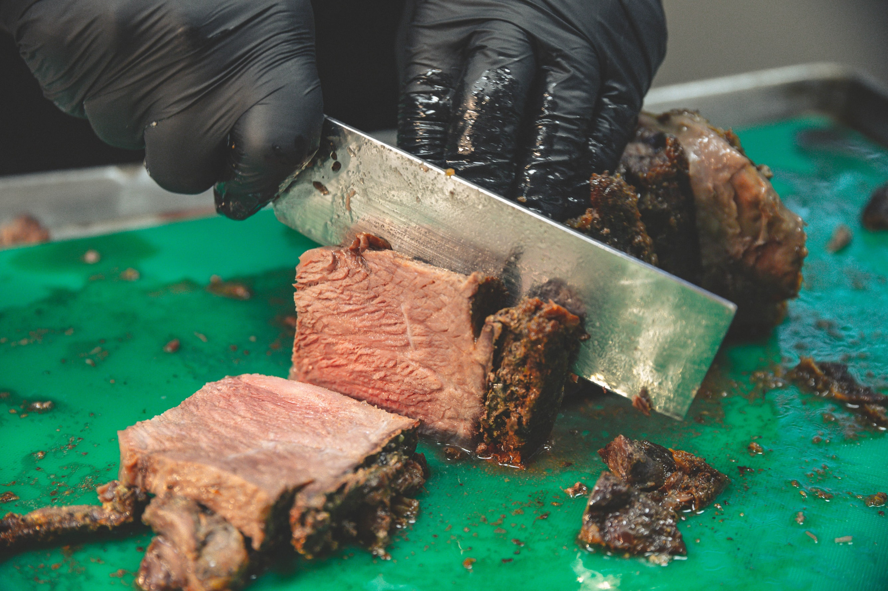

Sesame Orange Beef Veggie Stir-Fry

Description
This is a specific formula for achieving a perfectly pink prime rib cooked somewhere a shade under medium rare. To use this method you must have a full-sized, modern oven with a digital temperature setting that indicates when it is preheated. Older ovens with manual controls can vary greatly, and the doors may not have the proper insulation.
Ingredients
- 4 lb prime rib roast
- 1/4 cup unsalted butter
- 1 tablespoon freshly ground black pepper
- 1 teaspoon herbes de Provence
- kosher salt
Steps
- Place rib roast on a plate and bring to room temperature, 4 hours
- Preheat oven to 500 F
- Combine butter, pepper, and herbs in a bowl, spread over entire roast
- Roast the prime rib in preheated oven for 20 min. Turn oven off and, leaving roast in oven with door closed, let sit for 2 hours
- Remove from oven, slice and serve
- Serve and enjoy!